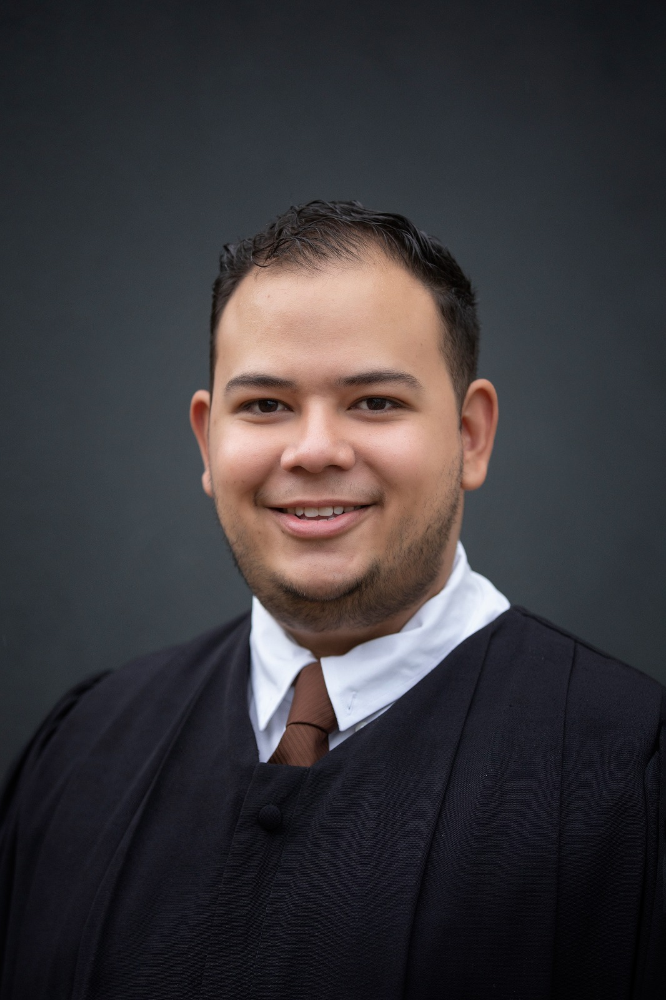

Sebastian's CV

Summary
My journey showcases a continuous pursuit of growth. Top academic performance highlights my dedication to learning. Seeking insights from experts to refine my skills, often leading project management tasks. Teamwork drives my improvement, while a disciplined approach fuels productive problem-solving. Eager to contribute to the software industry, with skills and experiences combined to add value.
MAJOR PROJECTS
Store Inventory • Fall 2018
- Developed retail management software in C++, enabling distinct access for administrators and buyers.
- Created a real-time inventory monitoring feature, displaying item details and managing stock levels.
- Added a search function for item lookup via ID, improving user experience and efficiency.
- Crafted a user-friendly checkout process displaying item summary and total price.
Navigation Cane for the Blind • Spring 2019
- Led project development, integrating sensors to enhance navigation for the visually impaired.
- Created an app providing real-time distance feedback, improving spatial awareness and safety.
- Adjusted the project to user needs through iterative testing, resulting in a reliable, user-friendly aid.
Voice Controlled Segway • Spring 2022
- Led the full development of a voice-controlled Segway, covering design, circuitry, and app integration.
- Built a robust circuitry system for seamless voice command functionality, improving user control.
- Created a mobile app for voice command operations, providing an intuitive interface for better navigation.
Education
- Mechatronics Engineer 2018–2022
- Specialty in Intelligent Robotic Systems 2022–2023
Certifications
- Nezam Academy - The Complete Software Testing Bootcamp
- ISTQB® - Foundation Level Certified Tester
- UPA - PLC Training
- Neurolinguistic Programming
- Emotional Intelligence Course
Contact Me